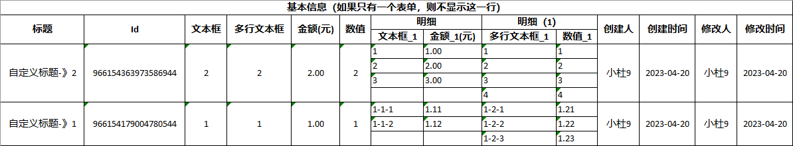
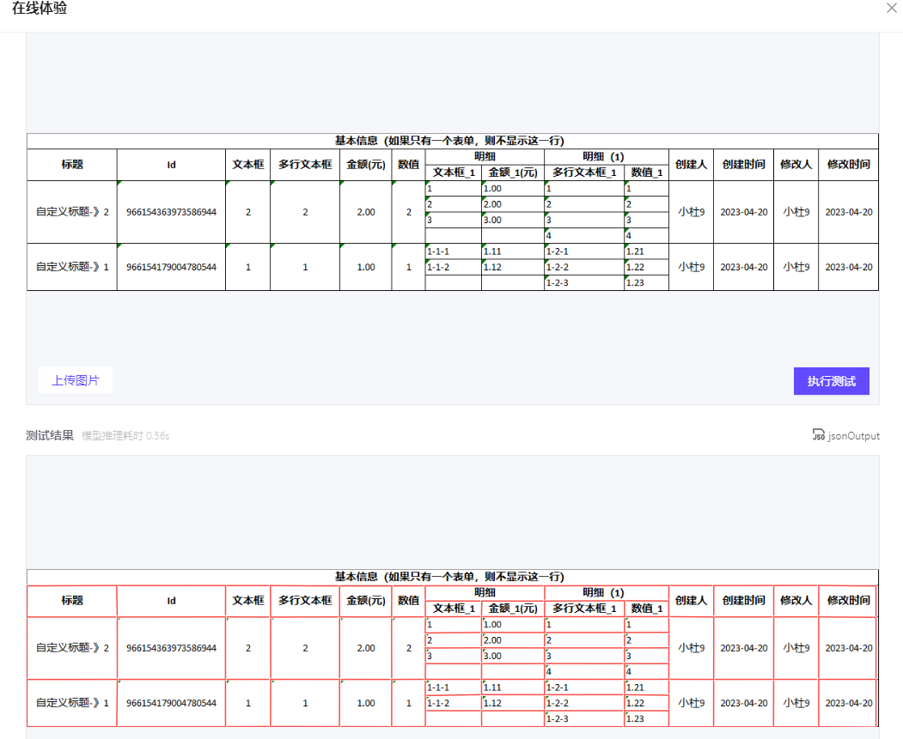
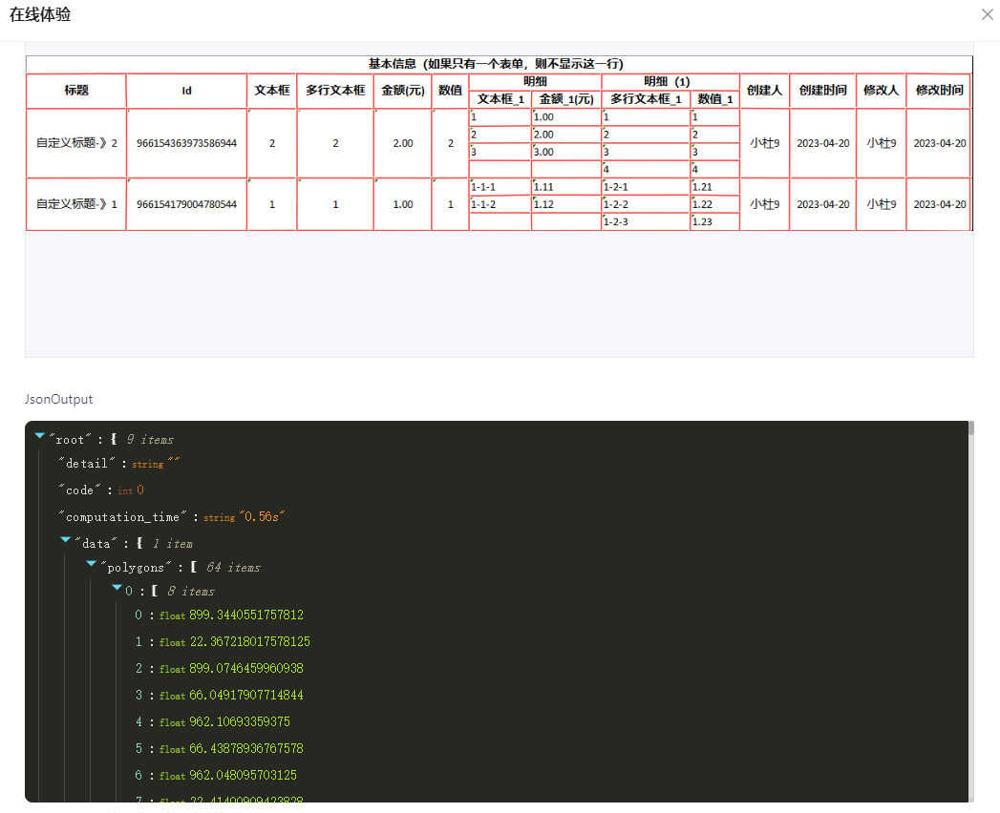
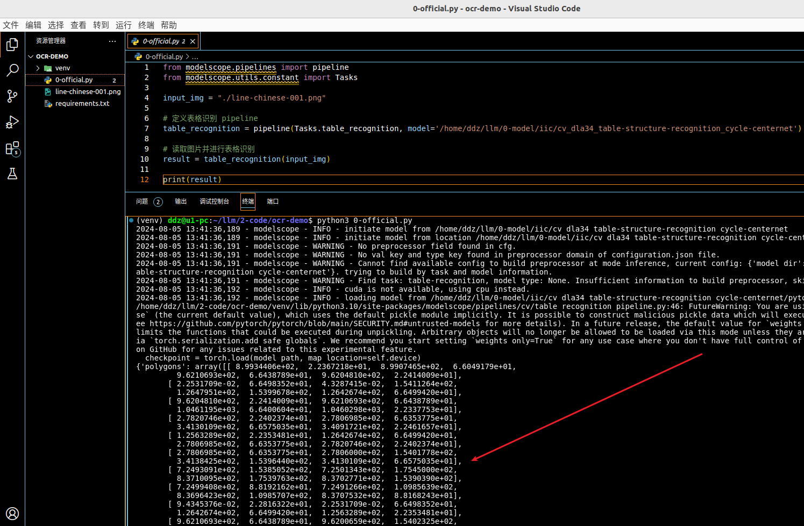
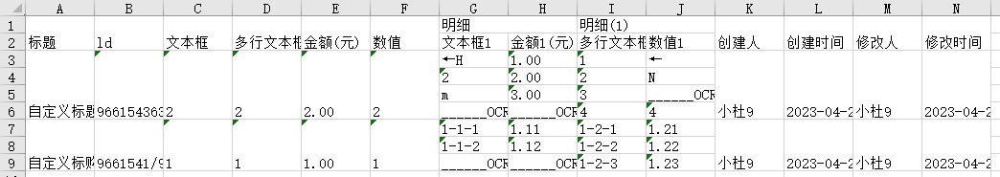

读光-表格结构识别
OCR 的细分领域：表格识别。这里介绍一下“读光-表格结构识别”以及对他的简单使用……
有线表格
你这还分有线的和无线的，你让咱们怎么搞？不行，必须把它拿下……
咱先准备一张测试图片：有线的包含中文的表格，如下图：

在线体验
在“魔搭社区”的这个项目下是可以在线体验的（地址上面已经给出），看一下测试结果：
识别表格区域

JSON输出

点击查看 JSON 输出
你还真别说，识别的真精准，但是这个输出……咱要的也不是这个啊！
啊！啊！啊！真气人啊
自己搞
既然人家暂不提供，咱能说啥呢，自己试试吧
首先创建一个
0-official.py ：官方示例requirements.txt ：依赖line-chinese-001.png ：测试图片polygons2CellsHelper.py ：助手类
requirements.txt
# 官方示例也就是 0-official.py 依赖的包
modelscope
numpy
packaging
addict
datasets
oss2
torch
pillow
simplejson
sortedcontainers
opencv-python
# cnocr 依赖
onnxruntime
# 生成 Excel
openpyxl
虚拟环境
# 创建
python3 -m venv venv
# 激活
source ./venv/bin/activate
# 退出虚拟环境
deactivate
# 安装依赖
pip install -r requirements.txt
0-official.py
官方示例代码稍加改动，如下：
下面看一下成功运行的截图：

封装助手类
他不是返回的是一个数组嘛，其中的每一项又是一个数组（记作：sub）；每一个sub数组中有8个float32类型的数值，其中这8个数值两个一组构成了一个单元格的4个顶点。咱这个助手类的目的是：咱给这个每一个sub数组添加一个属性，记录着他是属于第几行和第几列
点击查看详情
下面在看一个
点击查看详情
官方代码接入助手类
代码如下：
点击查看代码详情
输出的部分结果如下：
[{
"row_start": 0,
"row_end": 2,
"col_start": 10,
"col_end": 11,
"value": {
"left_bottom": {
"x": 899.3440551757812,
"y": 22.367218017578125
},
"left_top": {
"x": 899.0746459960938,
"y": 66.04917907714844
},
"right_top": {
"x": 962.10693359375,
"y": 66.43878936767578
},
"right_bottom": {
"x": 962.048095703125,
"y": 22.41400909423828
}
}
}
]
OCR识别
这一步咱根据单元格（8个数值，4个坐标）去抠图，也就是将原始图片切割成一个个的小单元格图片，之后利用OCR去识别这些小图片
点击查看代码详情
经过这一步咱就拿到了每一个单元格的值了，并且咱还知道这个值是第几行和第几列。得到的结果的结构如下：
[{
"row_start": 0,
"row_end": 2,
"col_start": 10,
"col_end": 11,
"value": "OCR 识别的单元格的内容"
}
]
真实数据截图如下：

openpyxl 生成 Excel
这一步咱将准备好的数据组装成 Excel，代码如下：
点击查看代码详情
下面看一下生成的 Excel 的截图：

源码下载
无线表格
敬请期待